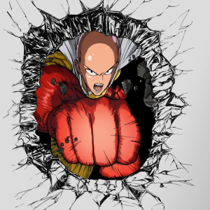

One Punch Man é uma série publicada originalmente em formato de webcomic criada pela mangaká que utiliza o pseudônimo de ONE em 2009. A série se tornou tao popular que chamou a atenção da editora japonesa de mangás Shueisha.A editora então comprou os direitos da série e os desenhos foram refeitos por Yusuke Murata. Em 2015 uma adaptação em anime foi feita pela Madhouse, com sua primeira temporada sendo exibida entre outubro e dezembro desse ano. A segunda temporada chegou em 2019,O enredo é bem humorado e faz várias sátiras aos battle-shounens clássicos, mas também possui personagens interessantes e arcos instigantes, bem como um universo bem construído e coeso. Claro que muitas vezes tudo isso pode passar batido no meio da ação desenfreada e alivio cômico da atração.
Saitama"é o nosso carequinha amado e protagonista de One Punch man em que ele derrota os monstros com apensa um soco.".
Saitama, um cidadão comum da Cidade Z, que após se ver desempregado e entediado decide treinar para se tornar um super herói por hobby. O protagonista então treina a ponto de perder todos os fios de cabelo da cabeça e se tornar a pessoa mais forte do planeta, literalmente derrotando qualquer inimigo com um simples soco.
Classificações Herois
Classificações de Viloes